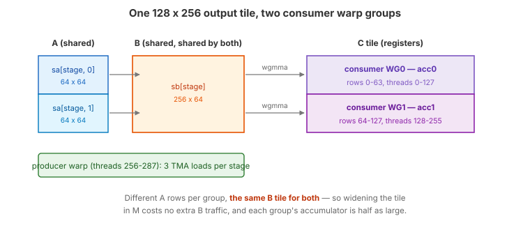
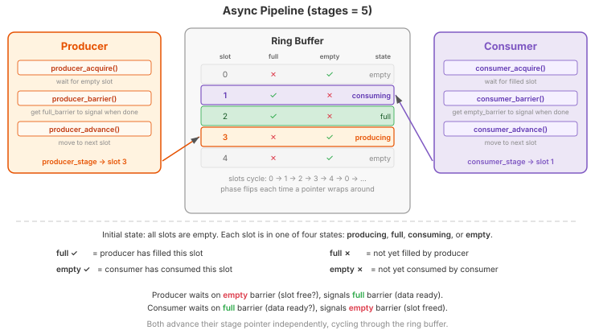
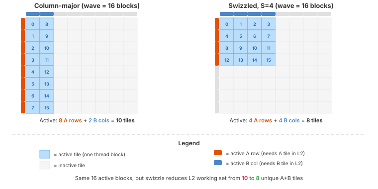
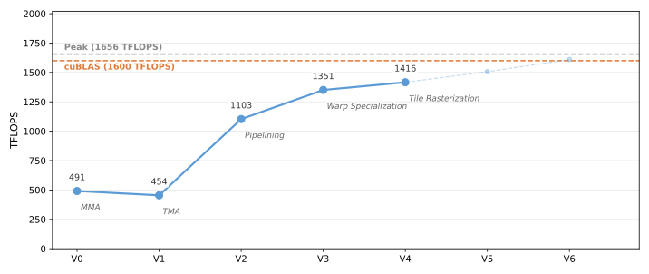

4. Pipeline Abstraction and Two Consumer Warp Groups¶
V3 decoupled loading from computing, but the compute side is still
narrow: one consumer warp group issues one WGMMA and immediately waits for
it. Between wgmma.wait_group(0) and the next mbarrier.wait, the tensor
core pipeline has nothing queued and drains. More bandwidth will not help — the
kernel needs more independent MMA work available at any instant.
This version adds two things:
Two consumer warp groups — the output tile is split by rows, and each warp group computes its own half against the same shared B tile. Two independent WGMMA streams now feed the tensor cores.
Pipeline abstraction — the barrier, phase, and stage bookkeeping from V3 is encapsulated in a reusable
Pipelineclass built ontilus.Class. With three participants instead of two, and more pipelines coming in later versions, the inline bookkeeping has outgrown its welcome.
The kernel also gains tile rasterization: a 1D grid remapped so that
concurrently running blocks share B tiles in L2. V4 turns it on with
swizzle_size=4, and V5 and V6 keep it.
The Full Kernel¶
class Pipeline(tilus.Class):
def __init__(
self,
num_stages: int,
producer_arrive_count: int = 1,
consumer_arrive_count: int = 1,
):
self.num_stages: int = num_stages
self.empty_barriers = self.mbarrier.alloc(
[consumer_arrive_count for _ in range(num_stages)]
)
self.full_barriers = self.mbarrier.alloc(
[producer_arrive_count for _ in range(num_stages)]
)
self.producer_stage: int32 = 0
self.consumer_stage: int32 = 0
self.producer_phase: uint32 = self.mbarrier.producer_initial_phase
self.consumer_phase: uint32 = self.mbarrier.consumer_initial_phase
def producer_acquire(self):
self.mbarrier.wait(
barrier=self.empty_barriers[self.producer_stage],
phase=self.producer_phase,
sem="relaxed",
scope="cta",
)
def producer_barrier(self) -> RegisterTensor:
return self.full_barriers[self.producer_stage]
def producer_advance(self):
self.producer_stage = (self.producer_stage + 1) % self.num_stages
self.producer_phase = self.producer_phase ^ (self.producer_stage == 0)
def consumer_acquire(self):
self.mbarrier.wait(
barrier=self.full_barriers[self.consumer_stage],
phase=self.consumer_phase,
sem="relaxed",
scope="cta",
)
def consumer_barrier(self) -> RegisterTensor:
return self.empty_barriers[self.consumer_stage]
def consumer_advance(self):
self.consumer_stage = (self.consumer_stage + 1) % self.num_stages
self.consumer_phase = self.consumer_phase ^ (self.consumer_stage == 0)
# v4 stays synchronous (wait_group(0) after every commit) -- overlapping WGMMA
# groups is v5's job. Three stages give the producer enough slack to stay ahead
# of a consumer that drains its MMA every K-tile; two stages do not, and measure
# no faster than v3. Keep the finalized search space to one deterministic H100
# configuration.
@tilus.autotune("num_stages", [3])
@tilus.autotune("block_m, block_n", [[128, 256]])
@tilus.autotune("block_k", [64])
@tilus.autotune("swizzle_size", [4])
class MatmulWGMMAV4(tilus.Script):
def __init__(self, num_stages, block_m, block_n, block_k, swizzle_size):
super().__init__()
self.num_stages = num_stages
self.block_m = block_m
self.block_n = block_n
self.block_k = block_k
self.swizzle_size = swizzle_size
def compute_block_coord(
self, linear_idx: int32, num_m_blocks: int32, num_n_blocks: int
):
"""Map 1D linear block index to 2D (m_block, n_block) with swizzle grouping.
Tiles in the same swizzle group share N-columns, keeping B columns in L2.
"""
swizzle_size = self.swizzle_size
tiles_per_group = num_m_blocks * swizzle_size
group_idx, in_group_idx = self.fast_divmod(linear_idx, tiles_per_group)
first_n = group_idx * swizzle_size
m_block: int32 = 0
n_block: int32 = 0
remainder = num_n_blocks - num_n_blocks // swizzle_size * swizzle_size
last_group_width = remainder if remainder > 0 else swizzle_size
if first_n + swizzle_size <= num_n_blocks:
m_block, r = self.fast_divmod(in_group_idx, swizzle_size)
n_block = first_n + r
else:
m_block, r = self.fast_divmod(in_group_idx, last_group_width)
n_block = first_n + r
return m_block, n_block
def __call__(
self,
m_size: int32,
n_size: int,
k_size: int,
a_ptr: ~float16,
b_ptr: ~float16,
c_ptr: ~float16,
):
num_stages = self.num_stages
block_m, block_n, block_k = self.block_m, self.block_n, self.block_k
swizzle_size = self.swizzle_size
num_m_blocks = cdiv(m_size, block_m)
num_n_blocks = cdiv(n_size, block_n)
self.attrs.warps = 9 # 1 producer + 2 consumer warp groups
offset_m: int32 = 0
offset_n: int32 = 0
if swizzle_size == 1:
# Bypass: plain 2D grid, identical rasterization to v3, with none
# of the swizzle-group address computation below. Resolved at
# trace time (swizzle_size is a compile-time autotune constant),
# so this branch costs nothing when swizzling is used instead.
self.attrs.blocks = [num_m_blocks, num_n_blocks]
offset_m = block_m * self.blockIdx.x
offset_n = block_n * self.blockIdx.y
else:
self.attrs.blocks = num_m_blocks * num_n_blocks
m_block, n_block = self.compute_block_coord(
self.blockIdx.x, num_m_blocks, num_n_blocks
)
offset_m = m_block * block_m
offset_n = n_block * block_n
ga = self.global_view(a_ptr, dtype=float16, shape=[m_size, k_size])
gb = self.global_view(b_ptr, dtype=float16, shape=[n_size, k_size])
block_m_half = block_m // 2
sa = self.shared_tensor(
dtype=float16, shape=[num_stages, 2, block_m_half, block_k]
)
sb = self.shared_tensor(dtype=float16, shape=[num_stages, block_n, block_k])
gc = self.global_view(c_ptr, dtype=float16, shape=[m_size, n_size])
# Each consumer WG elects one thread to release a stage after wait_group(0).
tma_pipe = Pipeline(num_stages, producer_arrive_count=1, consumer_arrive_count=2)
with self.thread_group(thread_begin=256, num_threads=32): # TMA producer warp
for offset_k in self.range(0, k_size, block_k, unroll=num_stages):
tma_pipe.producer_acquire()
# Producer warp is already 32 threads — the granularity TMA
# needs at SASS level. Only the arrive runs in single_thread so
# transaction-bytes is counted once.
with self.single_thread():
self.mbarrier.arrive_and_expect_tx(
tma_pipe.producer_barrier(),
transaction_bytes=sa[tma_pipe.producer_stage, 0].nbytes
+ sa[tma_pipe.producer_stage, 1].nbytes
+ sb[tma_pipe.producer_stage].nbytes,
)
self.tma.global_to_shared(
src=ga,
dst=sa[tma_pipe.producer_stage, 0],
offsets=[offset_m, offset_k],
mbarrier=tma_pipe.producer_barrier(),
)
self.tma.global_to_shared(
src=ga,
dst=sa[tma_pipe.producer_stage, 1],
offsets=[offset_m + block_m_half, offset_k],
mbarrier=tma_pipe.producer_barrier(),
)
self.tma.global_to_shared(
src=gb,
dst=sb[tma_pipe.producer_stage],
offsets=[offset_n, offset_k],
mbarrier=tma_pipe.producer_barrier(),
)
tma_pipe.producer_advance()
# drain: wait for consumer to finish processing all in-flight stages
for _ in self.range(min(num_stages, cdiv(k_size, block_k))):
tma_pipe.producer_acquire()
tma_pipe.producer_advance()
with self.thread_group(thread_begin=0, num_threads=128): # consumer WG0
acc0 = self.register_tensor(
dtype=float32, shape=[block_m_half, block_n], init=0.0
)
for offset_k in self.range(0, k_size, block_k, unroll=num_stages):
tma_pipe.consumer_acquire()
self.wgmma.fence()
self.wgmma.mma(
sa[tma_pipe.consumer_stage, 0],
sb[tma_pipe.consumer_stage].transpose(),
acc0,
)
self.wgmma.commit_group()
self.wgmma.wait_group(0)
with self.single_thread():
self.mbarrier.arrive(tma_pipe.consumer_barrier())
tma_pipe.consumer_advance()
self.store_global(
gc, self.cast(acc0, dtype=float16), offsets=[offset_m, offset_n]
)
with self.thread_group(thread_begin=128, num_threads=128): # consumer WG1
acc1 = self.register_tensor(
dtype=float32, shape=[block_m_half, block_n], init=0.0
)
for offset_k in self.range(0, k_size, block_k, unroll=num_stages):
tma_pipe.consumer_acquire()
self.wgmma.fence()
self.wgmma.mma(
sa[tma_pipe.consumer_stage, 1],
sb[tma_pipe.consumer_stage].transpose(),
acc1,
)
self.wgmma.commit_group()
self.wgmma.wait_group(0)
with self.single_thread():
self.mbarrier.arrive(tma_pipe.consumer_barrier())
tma_pipe.consumer_advance()
self.store_global(
gc,
self.cast(acc1, dtype=float16),
offsets=[offset_m + block_m_half, offset_n],
What Changed from V3¶
V3 |
V4 |
|
|---|---|---|
Warp structure |
5 warps: 1 producer + 1 consumer group |
9 warps: 1 producer + 2 consumer groups |
Output tile |
One |
Split by rows: each group owns |
A in shared memory |
|
|
B in shared memory |
|
Unchanged — shared by both consumer groups |
Barrier management |
Manual barriers, phases, and stage indices |
|
Empty-barrier arrivals |
128 (every consumer thread) |
2 (one elected thread per consumer group) |
Pipeline depth |
2 stages |
3 stages |
Grid layout |
2D grid |
1D grid with swizzled rasterization ( |
New instructions |
|
Two Consumer Warp Groups¶
{kind=link}

The block_m x block_n output tile is split by rows across two consumer
warp groups. Each loads its own A slab; both read the same B tile.¶
A WGMMA instruction is issued by one warp group and its accumulator lives in that group’s registers. To get two MMAs in flight, we need two warp groups, and they need separate accumulators — so the natural split is by rows of C:
Consumer WG0 (threads 0–127) computes rows
[0, block_m/2)of the tile.Consumer WG1 (threads 128–255) computes rows
[block_m/2, block_m).The producer warp (threads 256–287) feeds both.
The split has a pleasant property for memory traffic: the two halves need
different rows of A but the same columns of B. So A is stored as two
slabs, sa[stage, 0] and sa[stage, 1], one per consumer, while sb stays
a single tile that both groups read. Splitting the accumulator across two warp
groups also halves the per-thread register pressure of the accumulator, which is
what allows the tuned tile to grow from 128 x 128 (V3) to 128 x 256.
Note
warps = 9 again reflects warp-group alignment: consumers occupy warps
0–3 and 4–7 (both warp-group aligned), leaving warp 8 for the producer.
Because two warp groups now share each stage, the empty-barrier arrival count changes. In V3 all 128 consumer threads arrived; here each group elects a single thread:
tma_pipe = Pipeline(num_stages, producer_arrive_count=1, consumer_arrive_count=2)
consumer_arrive_count=2 means the producer may refill a stage only after
both consumer groups have released it. Electing one thread per group (rather
than letting all 256 arrive) turns 256 barrier updates per K-tile into 2.
Pipeline Abstraction¶
On Hopper, mbarriers are the mechanism for tracking asynchronous work, and shared memory is the buffer for data in transit. When producer and consumer run at different speeds — always, in practice — a pipeline decouples them.
A pipeline has three components:
Producer — generates data and writes it into a buffer slot when one is available.
Consumer — reads data from a slot when one is filled.
Ring buffer — a fixed number of slots (
num_stages) that producer and consumer cycle through independently.
Each slot carries two mbarriers:
full barrier — signaled when the producer has filled the slot. Consumers wait on this.
empty barrier — signaled when the consumers have drained the slot. The producer waits on this.
Producer and consumer each keep a stage pointer and a phase variable, and advance through the ring independently, synchronized only by barrier signals.
{kind=link}

A 5-stage pipeline. The producer is filling slot 3 while the consumers drain slot 1; slot 2 is full and waiting, slots 0 and 4 are empty. The check marks indicate whether each slot’s full/empty mbarrier has completed.¶
V3 managed all of this inline. The Pipeline class below packages it behind a
small API. Note that this is not a built-in part of Tilus — it is assembled
from ordinary instructions (mbarrier.alloc, mbarrier.wait, …) as a
user-level helper. Managing the barriers by hand, as in V3, remains perfectly
valid.
class Pipeline(tilus.Class):
def __init__(
self,
num_stages: int,
producer_arrive_count: int = 1,
consumer_arrive_count: int = 1,
):
self.num_stages: int = num_stages
self.empty_barriers = self.mbarrier.alloc(
[consumer_arrive_count for _ in range(num_stages)]
)
self.full_barriers = self.mbarrier.alloc(
[producer_arrive_count for _ in range(num_stages)]
)
self.producer_stage: int32 = 0
self.consumer_stage: int32 = 0
self.producer_phase: uint32 = self.mbarrier.producer_initial_phase
self.consumer_phase: uint32 = self.mbarrier.consumer_initial_phase
def producer_acquire(self):
self.mbarrier.wait(
barrier=self.empty_barriers[self.producer_stage],
phase=self.producer_phase,
sem="relaxed",
scope="cta",
)
def producer_barrier(self) -> RegisterTensor:
return self.full_barriers[self.producer_stage]
def producer_advance(self):
self.producer_stage = (self.producer_stage + 1) % self.num_stages
self.producer_phase = self.producer_phase ^ (self.producer_stage == 0)
def consumer_acquire(self):
self.mbarrier.wait(
barrier=self.full_barriers[self.consumer_stage],
phase=self.consumer_phase,
sem="relaxed",
scope="cta",
)
def consumer_barrier(self) -> RegisterTensor:
return self.empty_barriers[self.consumer_stage]
def consumer_advance(self):
self.consumer_stage = (self.consumer_stage + 1) % self.num_stages
self.consumer_phase = self.consumer_phase ^ (self.consumer_stage == 0)
Pipeline inherits from tilus.Class, which behaves like
Script but for helper objects that are not kernels themselves: it
can allocate barriers and shared tensors and use any Tilus instruction. Two
details are worth pointing out:
The phases are initialized from
self.mbarrier.producer_initial_phaseandself.mbarrier.consumer_initial_phaserather than the literals1and0that V3 used.producer_advance/consumer_advanceflip the phase on wrap-around (phase ^= (stage == 0)) rather than keeping a per-stage array as V2 did. One scalar per role replacesnum_stagesregisters, and after the loop is unrolled bynum_stagesthe compiler resolves each stage index to a constant.
The kernel-side usage reads cleanly:
tma_pipe.producer_acquire() # wait for an empty slot
# ... issue TMA loads against tma_pipe.producer_barrier() ...
tma_pipe.producer_advance()
tma_pipe.consumer_acquire() # wait for a full slot
# ... issue WGMMA on tma_pipe.consumer_stage ...
self.mbarrier.arrive(tma_pipe.consumer_barrier()) # release the slot
tma_pipe.consumer_advance()
Tile Rasterization¶
V4 also introduces the grid-remapping machinery that V5 relies on. Each output tile (m, n) needs a row-strip of A and a column-strip of B. A rows are unique per tile, but B columns are shared by every tile in the same N-column — so B traffic can be served from L2 if the tiles that share it run at the same time.
The question is how to order tiles so that the set of A rows and B columns touched by the concurrently running blocks — the L2 working set — stays small.
{kind=link}

An 8 x 8 tile grid with a wave of 16 active blocks. Orange bars mark active A rows; blue bars mark active B columns. Swizzling yields a smaller working set (8 vs 10 strips) for the same number of active blocks.¶
With a plain 2D grid, blockIdx.x walks down M first, so a wave of 16 blocks
fills two full columns: 8 A rows plus 2 B columns = 10 strips resident. Grouping
the same 16 blocks into a 4 x 4 square touches 4 A rows plus 4 B columns = 8
strips — 20% less L2 pressure. The mapping divides the N axis into groups of
swizzle_size columns and assigns tiles within a group in row-major order:
def compute_block_coord(
self, linear_idx: int32, num_m_blocks: int32, num_n_blocks: int
):
"""Map 1D linear block index to 2D (m_block, n_block) with swizzle grouping.
Tiles in the same swizzle group share N-columns, keeping B columns in L2.
"""
swizzle_size = self.swizzle_size
tiles_per_group = num_m_blocks * swizzle_size
group_idx, in_group_idx = self.fast_divmod(linear_idx, tiles_per_group)
first_n = group_idx * swizzle_size
m_block: int32 = 0
n_block: int32 = 0
remainder = num_n_blocks - num_n_blocks // swizzle_size * swizzle_size
last_group_width = remainder if remainder > 0 else swizzle_size
if first_n + swizzle_size <= num_n_blocks:
m_block, r = self.fast_divmod(in_group_idx, swizzle_size)
n_block = first_n + r
else:
m_block, r = self.fast_divmod(in_group_idx, last_group_width)
n_block = first_n + r
return m_block, n_block
When num_n_blocks is not divisible by swizzle_size, the final group is
narrower; last_group_width handles that case so the mapping stays a bijection.
Hint
Integer division and modulo are expensive on GPUs. For compile-time constant
divisors (like swizzle_size) the compiler emits a multiply and shift
automatically. For grid-constant divisors — the same for every block, but
not known at compile time, like tiles_per_group —
fast_divmod() precomputes a magic number once per launch
and uses integer multiply-shift instead of the compiler’s floating-point
fallback.
V4’s tuned configuration selects swizzle_size=4. The kernel also keeps a
swizzle_size=1 bypass that launches a plain 2D grid with no remapping at all;
because swizzle_size is a compile-time autotune constant, whichever branch
applies is resolved while tracing, so the unused one costs nothing.
Pipeline Depth¶
V4 also deepens the ring buffer from two stages to three, and this matters more
than it looks. The consumer here is still synchronous — wait_group(0)
after every commit — so it stops dead at the end of each K-tile. With only two
stages the producer can be at most one tile ahead, and every consumer stall is a
producer stall shortly after. Measured on an H100, a 2-stage V4 runs at
1.90 ms — statistically indistinguishable from V3’s 1.91 ms, i.e. the two
consumer warp groups buy nothing at all. Three stages gives the producer enough
slack to stay ahead of the drain, and the same kernel drops to 1.71 ms.
The obvious next question — why not four stages, or five — is what V5 answers: past three, depth alone stops helping, and what the kernel needs instead is for the consumer to stop draining.
Walkthrough¶
Producer Warp¶
with self.thread_group(thread_begin=256, num_threads=32): # TMA producer warp
for offset_k in self.range(0, k_size, block_k, unroll=num_stages):
tma_pipe.producer_acquire()
# Producer warp is already 32 threads — the granularity TMA
# needs at SASS level. Only the arrive runs in single_thread so
# transaction-bytes is counted once.
with self.single_thread():
self.mbarrier.arrive_and_expect_tx(
tma_pipe.producer_barrier(),
transaction_bytes=sa[tma_pipe.producer_stage, 0].nbytes
+ sa[tma_pipe.producer_stage, 1].nbytes
+ sb[tma_pipe.producer_stage].nbytes,
)
self.tma.global_to_shared(
src=ga,
dst=sa[tma_pipe.producer_stage, 0],
offsets=[offset_m, offset_k],
mbarrier=tma_pipe.producer_barrier(),
)
self.tma.global_to_shared(
src=ga,
dst=sa[tma_pipe.producer_stage, 1],
offsets=[offset_m + block_m_half, offset_k],
mbarrier=tma_pipe.producer_barrier(),
)
self.tma.global_to_shared(
src=gb,
dst=sb[tma_pipe.producer_stage],
offsets=[offset_n, offset_k],
mbarrier=tma_pipe.producer_barrier(),
)
tma_pipe.producer_advance()
# drain: wait for consumer to finish processing all in-flight stages
for _ in self.range(min(num_stages, cdiv(k_size, block_k))):
tma_pipe.producer_acquire()
tma_pipe.producer_advance()
The structure matches V3’s producer, now expressed through the Pipeline API.
Three TMA loads are issued per stage instead of two: one per A slab, plus B. The
arrive_and_expect_tx declares all three tiles’ bytes at once, so a single
barrier tracks the whole stage.
Note the placement of single_thread(): it wraps only the
arrive_and_expect_tx, not the TMA calls. The transaction-byte declaration
must happen exactly once, but the loads themselves are issued at warp
granularity.
Consumer Warp Groups¶
with self.thread_group(thread_begin=0, num_threads=128): # consumer WG0
acc0 = self.register_tensor(
dtype=float32, shape=[block_m_half, block_n], init=0.0
)
for offset_k in self.range(0, k_size, block_k, unroll=num_stages):
tma_pipe.consumer_acquire()
self.wgmma.fence()
self.wgmma.mma(
sa[tma_pipe.consumer_stage, 0],
sb[tma_pipe.consumer_stage].transpose(),
acc0,
)
self.wgmma.commit_group()
self.wgmma.wait_group(0)
with self.single_thread():
self.mbarrier.arrive(tma_pipe.consumer_barrier())
tma_pipe.consumer_advance()
self.store_global(
gc, self.cast(acc0, dtype=float16), offsets=[offset_m, offset_n]
)
Each consumer group runs the same loop against its own A slab (consumer_idx
0 or 1) and its own accumulator, then writes its half of C with
store_global(). The two groups are otherwise identical, and
the second differs only in the slab index and the row offset of its store.
The MMA is still synchronous — wait_group(0) after every commit — so
each group finishes its MMA before releasing the stage. The parallelism gained
here comes from having two groups doing that at once, not from overlapping
within a group. Overlapping within a group is V5’s job, and it needs a deeper
pipeline to be safe.
Performance¶
V4 reaches 642 TFLOPS (1.71 ms), 12% ahead of V3, and wins in every one of three fresh processes. Two counters explain it. Tensor pipe utilization rises from 75% to 80% — the second consumer group supplies the independent MMA work V3 could not. And DRAM throughput falls from 61% to 27%, because both groups read the same B tile and the 4-wide raster keeps those tiles resident in L2. V4 turns a memory-hungry kernel into a comfortably compute-bound one.
The three ingredients are not separable: two consumer groups without the extra pipeline stage measure no faster than V3 at all, and the raster only pays once the kernel is issuing enough MMA to be sensitive to B-tile latency. The complete source is at examples/hopper_matmul/matmul_v4.py.

Hopper matmul performance on H100 SXM (M=N=K=8192, fp16). Latency is CUDA-event timed, median of three fresh processes. Peak is the published dense FP16 tensor core throughput of the H100 SXM.¶
What’s Next¶
V4 doubles the number of independent MMA streams, but each stream is still strictly serial: issue, commit, wait, release, repeat. The tensor cores drain between every K-tile of every group, and at 80% tensor utilization those drains are now the largest remaining gap. Adding pipeline stages cannot close it — a deeper buffer feeds a consumer that keeps stopping.
In the next version, the consumer stops stopping: we keep a WGMMA
group in flight across iterations with wait_group(1), issuing K-tile
i+1’s MMA before waiting on K-tile i’s.